Sotva jsem stačila vybalit kufr z Budapešti a už se zase chystám na cesty… A tak by bylo záhodno shrnout naše dojmy z překrásné maďarské metropole. Z nedostatku času asi tentokrát sáhnu po nějaké stručnější formě (i když víte, že já být stručná moc neumím) a pokusím se podat vám best of Budapešť v kostce. Nedá mi to ale nepodělit se o historku, kterak jsme málem nikam neodjeli :D.
Přestože to do Budapešti není nijak zvlášť daleko autem, rozhodli jsme se cestovat tentokrát se Student Agency. Vyhlídli jsme si bus v 10:00 a v pohodičce si vyšli s předstihem, abysme si ještě stihli směnit maďarské forinty. Čtvrt hodinu před předpokládaným odjezdem jsme už stepovali u Grandu, načež ohlásili na tabuli odjezdů 15 minutové zpoždění našeho spoje, který jel z Prahy. Čekali jsme do 10:00 a když se v tu chvíli změnilo očekávané zpoždění na 30 minut, šli jsme si sednou do čekárny. Průběžně jsme kontrolovali na tabuli i pohledem z okna, jestli se náš bus už neobjevil. Asi v 10:20 jsme vylezli z čekárny… načež jsme viděli náš bus vesele ujíždět z nádraží na Budapešť :D. U zákaznického okýnka nám nijak zvlášť nápomocní nebyli. Nedokázali nám vysvětlit, proč autobus odjel dřív, aniž by se změnily údaje na tabuli a nakonec nám nabídli, že nám vrátí peníze za jízdenky nebo nám zarezervují místa v autobuse, který jede ve 13:00. Zvolili jsme tedy nakonec druhou možnost a vyrazili do Veselé čajovny uklidnit se čajem a banánem s matcha pudinkem, kde jsme také nafotili toto mimořádně smutné selfíčko :D.
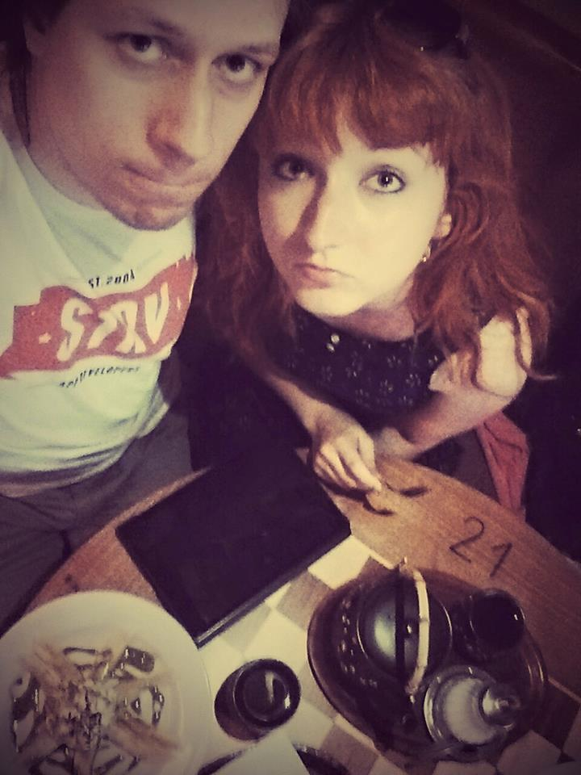
Smutek ve Veselé čajovně
Po tomto strastiplném startu už pak ale bylo všechno jenom pohádkové. Budapešť jsme si zamilovali hned na první pohled při přejíždění Dunaje, kdy se před námi objevila v celé své kráse a (navzdory předpovědi počasí) zalitá sluncem. Z nádraží Népliget jsme to měli přímým metrem přesně 10 zastávek k našemu Airbnb ubytování u paní Szuszy.
Maďarské metro je vážně retro a líp bych to neřekla, ani kdyby se to nerýmovalo :D. Jezdí tady soupravy, které jste mohli vidět v Praze tak naposled někdy v osmdesátkách. Setkali jsme se s nimi hlavně na modré lince M3 - na červené M2 už jezdí lepší a modernější kousky. Tak či tak nás rychle a bezpečně dopravilo až na naši zastávku Dózsa György út, odkud jsme to měli jen coby kamenem k našemu bytečku. Paní Szusza nás hrozně mile přivítala společně se svým přítelem Andrewem, který nám dal spoustu tipů, co v Budapešti navštívit a kam se podívat. Nakoupili pro nás dokonce nějaké pečivo a nechali nám v lednici obložený talíř, maďarské pivo a spoustu dalších dobrot a na uvítanou si s námi připili maďarskou “pálinkou”. Byteček byl úplně úžasný, čistý a prakticky vybavený a celkově to hodnotím jako naši nejlepší Airbnb zkušenost ever :-). Navečer jsme se šli projít k Dunaji a trochu prozkoumat okolí, ale nakonec jsme samozřejmě skončili u té obložené mísy, piva a nového dílu Hry o trůny :D.
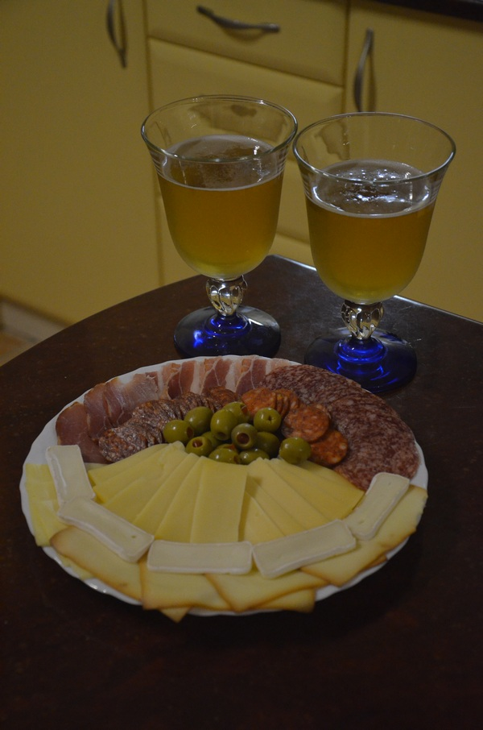
Na uvítanou
Další den už byl o poznání zajímavější. Hned po snídani jsme se vydali k bazilice svatého Štěpána, která je jednou ze zdejších dominant. Stavba je zasvěcena svatému králi Ištvánovi a v kapli dokonce můžete nalézt relikvii - jeho mumifikovanou ruku :-O. Obdivovat můžete překrásné mozaiky na kupoli nebo deskové obrazy za oltářem, které ilustrují život krále Ištvána.
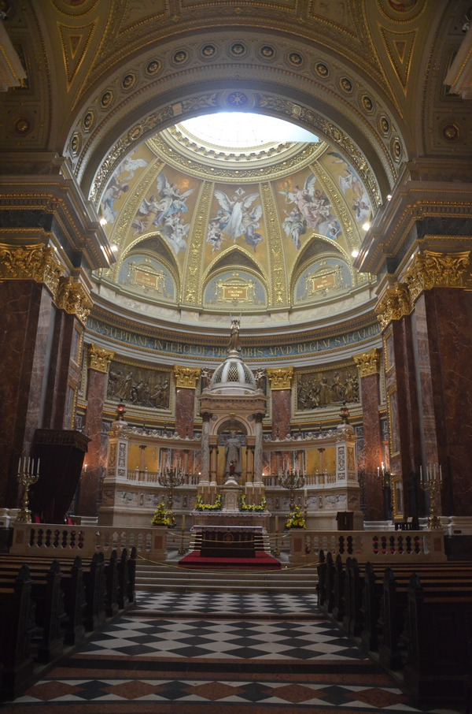
Interiér baziliky
Naše další kroky vedly směrem k Dunaji k působivému mostu Széchenyi Lánchíd, odkud je krásný výhled nejen na komplex národní maďarské galerie a muzea historie Budapešti, ale prakticky na celý protější břeh plný dalších zajímavých památek.
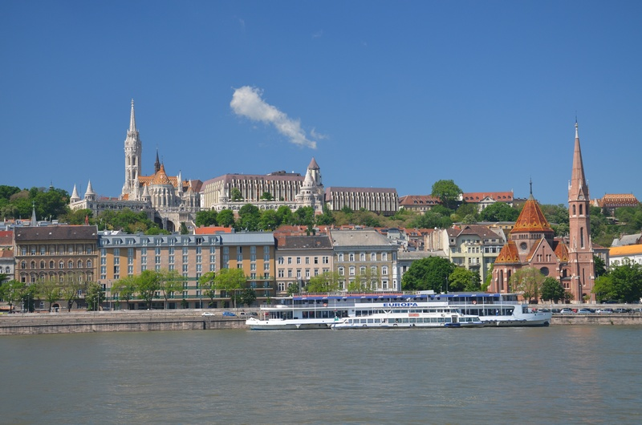
Pohled na Mátyás templom
Po nábřeží jsme došli až k budově ze všech nejznámější - k Parlamentu. Naživo je opravdu monumentální, obklopený krásným zeleným parčíkem a samozřejmě turisty.
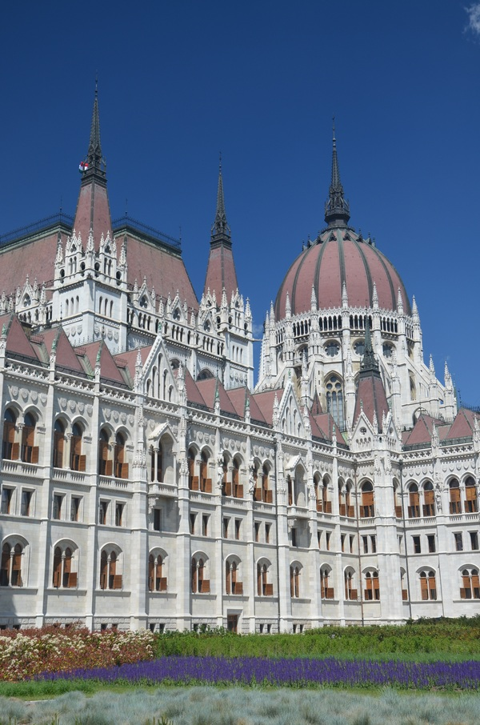
Parlament
U Parlamentu nás dostihl hlad a žízeň, a tak jsme usoudili, že je nejvyšší čas ochutnat maďarskou kuchyni. Péťa přes Trip Advisor objevil úžasnou restauraci Hungarikum Bisztró, která nabízí tradiční maďarské dobroty, nachází se jen malý kousek do Parlamentu a ceny jsou také slušné. Ochutnali jsme maďarský chleba s něčím, co se podobalo naší zakysané smetaně, gulášovou polévku, já rybu, Péťa kachničku, jablečný koláč, maďarské pivo a samozřejmě pálinku. Ke každému jídlu tu také servírují k dochucení papričky o různém stupni pálivosti. Obsluha byla hrozně milá a pozorná a po každém chodu se zajímali, zda nám chutnalo :-). Prostě naprosto skvělý a nepřekonatelný gastronomický zážitek, který si nesmíte nechat v Budapešti ujít!
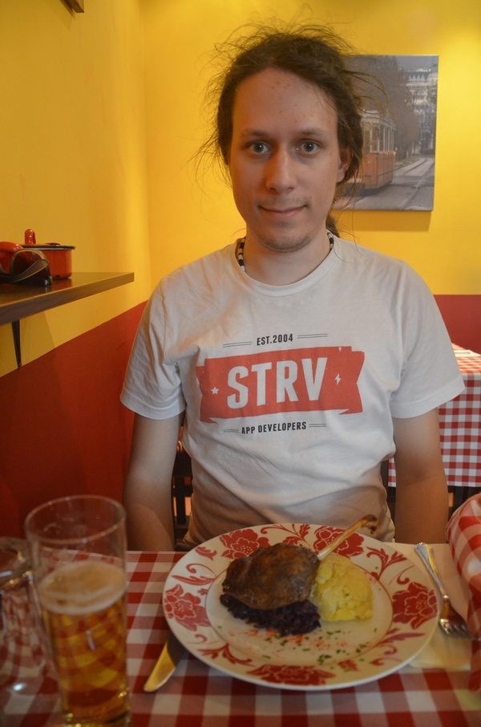
Gastronebe v Hungarikum Bisztró
Protože jsme ještě měli v zásobě dost sil, vydali jsme se do židovské čtvrti. V průvodci mi přišla trochu opomenutá, ale její atmosféra plná úzkých uliček a stylových obchůdků byla úžasná. Hodně se nám líbila i pasáž se spoustou všemožných barů, hospůdek, kavárniček a restaurací. Každá byla vyladěna do jiného vizuálního stylu a všechny vypadaly úplně úžasně. Protože byl právě čas na odpolední kávu, do jednoho z těchto podniků jsme zapluli a já jsem využila happy hours na koktejly O:-). Poté už jsme se vydali k nedaleké židovské synagoze - největší v Evropě. Dovnitř se prý vejde až 3000 lidí!
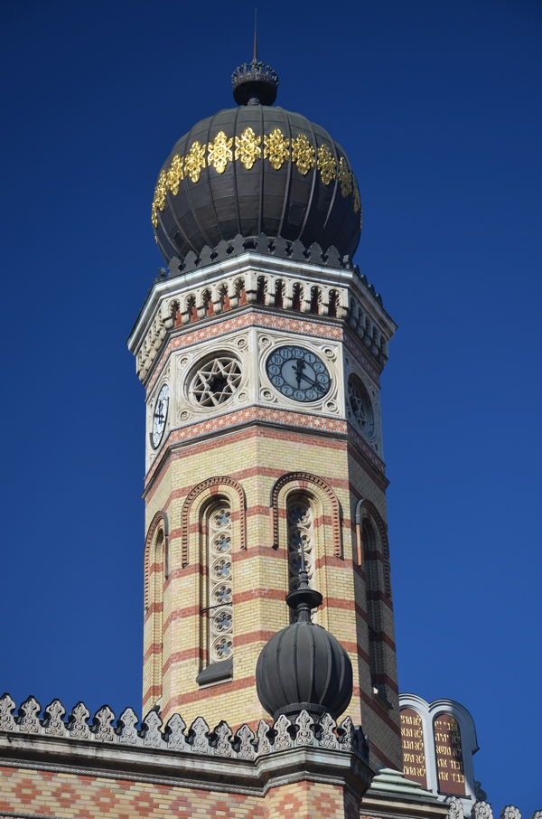
Synagoga
Podvečer jsme vyplnili procházkou zpět k Dunaji, kde se nachází celá řada architektonicky zajímavých budov, paláců a kostelů a nakonec jsme to stočili zpět do židovské čtvrti, kde jsme chtěli vyzkoušet jeden z tipů, které nám dal Andrew. V žádném průvodci ani na internetu jsem se o něm nedočetla, ale prý sem za tímto unikátem jezdí turisté z celé Evropy. Jedná se o tzv. “ruin bars” nebo “ruin pubs” - opuštěné vybydlené budovy, z nichž nějací nadšenci vytvořili originální prostor ke společenskému setkávání, koncertům či výstavám.
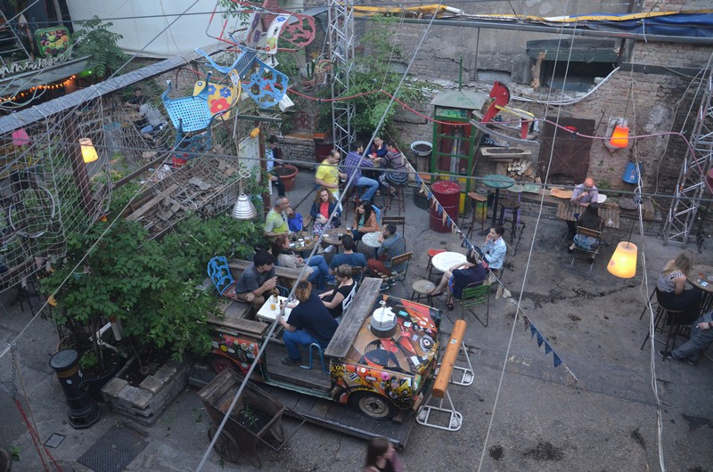
Ruin bar
Ruin bar Szimpla, který jsme navštívili my, je obrovský. Najdete tu několik barů a stánků s občerstvením a to vše v naprosto unikátní atmosféře, kterou asi ani fotky nedokážou věrně vystihnout. Interiér doplňuje neuvěřitelné množství sesbírané veteše - kadeřnické sedačky i se “sušákama”, vana, vyřazené televizory a počítače, “kůň” z tělocvičny… zkrátka cokoliv, na co si jen vzpomenete. Nám se poštěstilo, že ten večer se zrovna konal i jeden z pravidelných jazzových koncertů. Ruin bar je něco, co jen tak někde jinde neuvidíte, takže při návštěvě Budapešti tuto atrakci určitě nevynechejte ;-)!
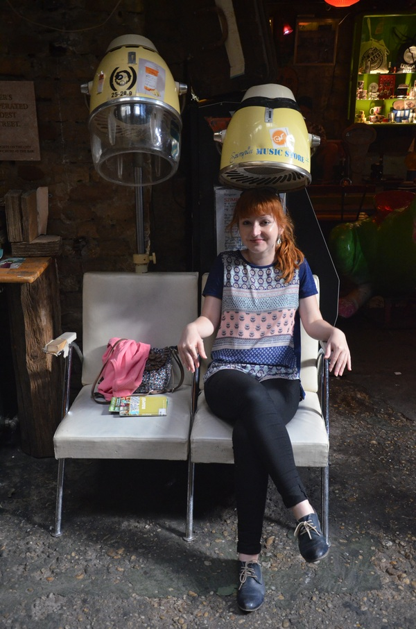
Szimpla
Protože nás čtvrteční program docela vyčerpal, rozhodli jsme se naplánovat si na pátek trochu víc relax. Dopoledne jsme se pěšky vydali do městského parku Városliget, kde najdete spoustu atrakcí od zoologické zahrady přes zábavní park a cirkus až po proslulé lázně Széchenyi. Tyto překrásné barokní lázně jsou vystavěny na jednom z nejteplejších pramenů ve městě (75 °C) a určitě patří také k těm nejhojněji navštěvovaným. Andrew nám je velmi doporučoval, takže jsme jejich návštěvu zvažovali. Nakonec jsme ale dali přednost jiným, méně turisticky provařeným - o tom však až později.
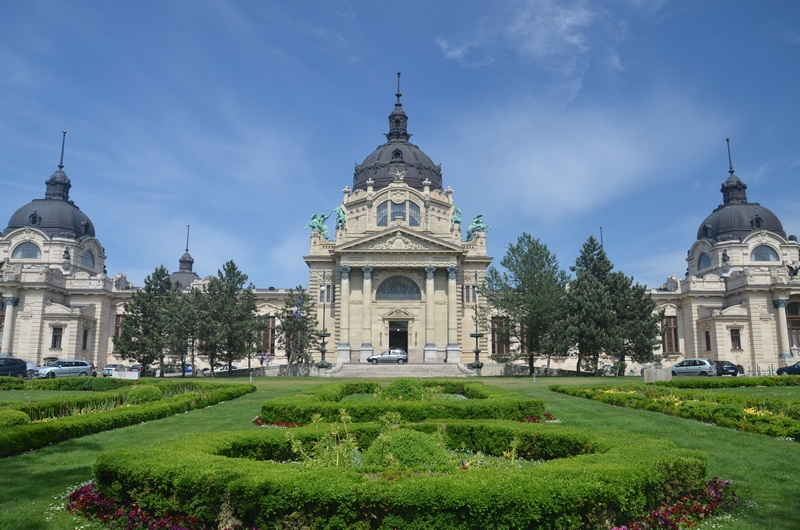
Lázně Széchenyi
Co zde rozhodně nesmíte vynechat, je velkolepé náměstí Hrdinů se sochami hrdinů vlasti a náčelníků sedmi maďarských kmenů. Po stranách náměstí se také nachází Muzeum výtvarných umění a Palác umění.
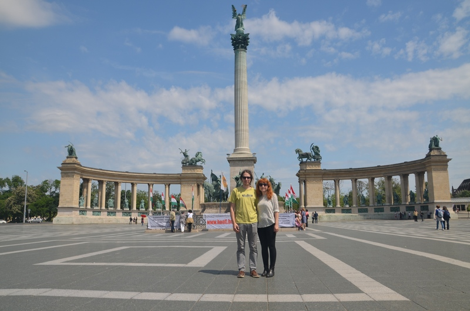
Náměstí Hrdinů
Když vás odpočinek v krásně zeleném parku unaví, můžete se stejně jako my (poháněni hladem) vydat navštívit jedno z budapešťských tržišť. Samozřejmě je tu Vásárcsarnok - centrální tržiště vyhledávané turisty. My jsme ale nakonec dali přednost menšímu tržišti přímo nad zastávkou metra Lehel tér, kam chodí místní. Najdete tu podle mě všechno, co při návštěvě maďarské tržnice potřebujete vidět - koření, uzeniny, ovoce a zeleninu a samozřejmě nějaký ten langoš :-)! Že jsme tu pokoupili superlevné maďarské klobásy, o tom asi vůbec mluvit nemusím. A jedla jsem tady asi největší langoš svého života jen za 50 korun :D…
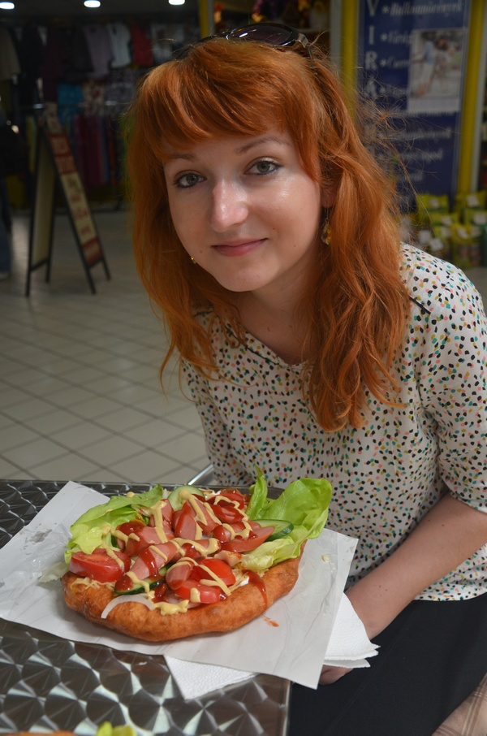
Superlangoš
Zde by se možná hodila malá odbočka o cenách v Budapešti. Mně osobně přišly úplně super - malá pomůcka pro přepočítávání z forintů na naše koruny: Od aktuální ceny ve forintech si škrtněte jednu nulu a máte plus mínus českou cenu (reálně je to ale ještě o něco méně). I když tak třeba za oběd nebo nákup platíte dvoutisícovou bankovkou, je to vlastně za hubičku :D. Pozor ovšem na to, že ve spoustě obchodů neberou platební karty! Určitě doporučuju vzít si s sebou dostatek hotovosti a nespoléhat se na to, že budete hodně platit kartou. V obchodech se suvenýry mě požadavek na keš docela překvapil - v restauracích nebo třeba v lázních by platit kartou problém být neměl. Městská doprava je o trochu dražší než v Čechách - nepřestupní jednorázová jízdenka vás přijde na 350 forintů. Pokud se v Budapešti zdržíte déle, určitě se vám vyplatí výhodnější balíček po 10 jízdenkách za 3000 forintů. A pozor - vstup do lázní na 3 hodiny (včetně možnosti využít saunu apod.) asi za 2800 forintů. Neuvěřitelné ceny :D!
A když jsme tedy u těch lázní, rozhodli jsme se odpoledne navštívit lázně Veli Bej, nacházející se na protějším břehu Dunaje. Přestože si na Trip Advisoru kdosi stěžoval na nepříjemný personál, my měli na lidi štěstí a dát přednost méně známým a méně historickým lázním byla jednoznačně dobrá volba. Ve Veli Bej bylo strašně málo turistů, takže jsme se s nikým nemuseli přetahovat o jakuzzi a v sauně jsme byli úplně sami. Mně osobně se nejvíc líbily turecké lázně s úžasně teplou vodou (něco přesně pro mě), ale vyzkoušeli jsme si i plavecký bazén, Kneippův chodník, již zmiňovanou jakuzzi a parní saunu. Péťa propadnul saunovému světu, takže já se pak šla jen natáhnout na lehátko a číst si a relaxovat. Užili jsme si to úplně maximálně, takže má další rada ohledně Budapešti zní: Lázně v žádném případě nevynechat :-)!!
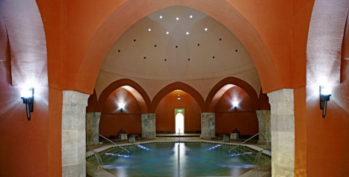
Foto z internetu, ale přesně takhle krásné to tam je :)
No a abych vás moc neunavila, tady to pro dnešek asi zakončím. Na pokračování se můžete těšit zase příště :-).
a byli jste i v Bude? :)
Dovezli jste si hodne klobas???